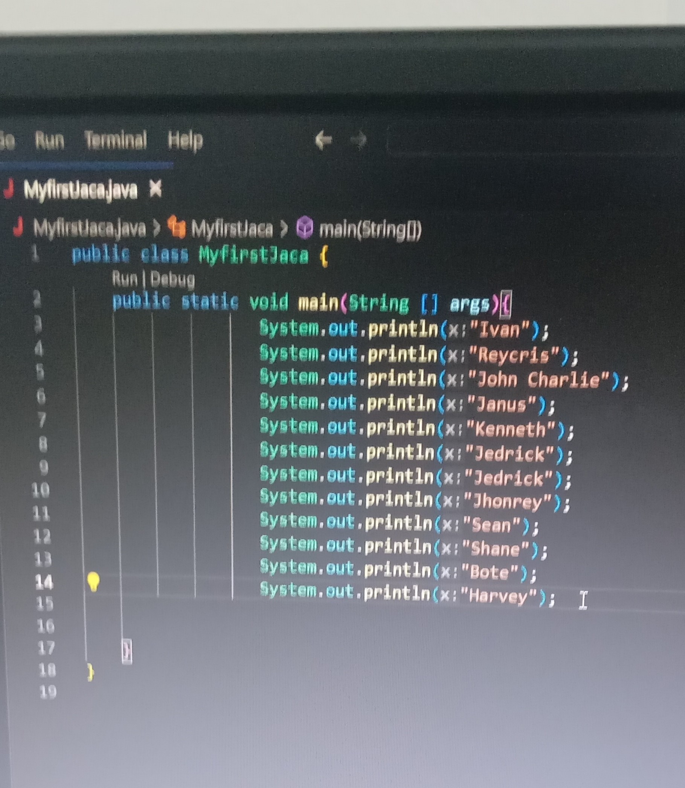
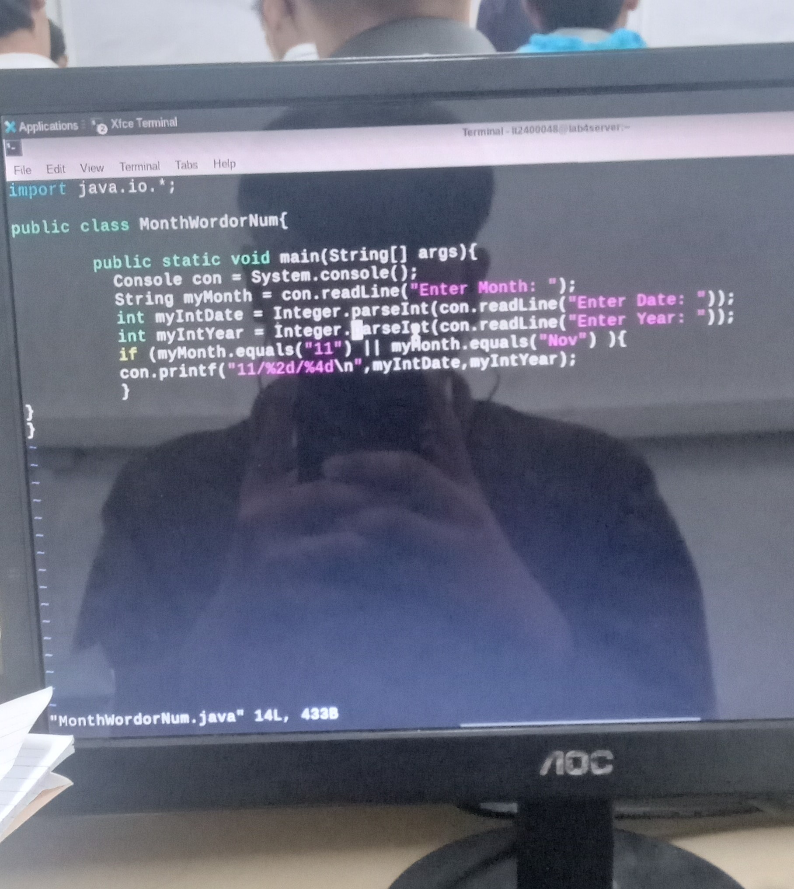
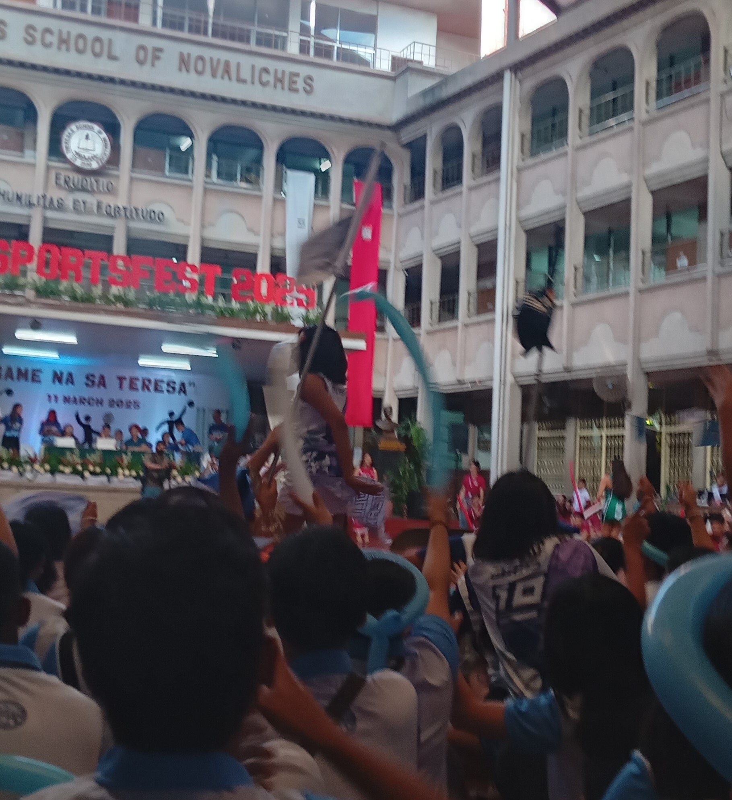

My College Journey 📝
From my first day in college to today, here’s a timeline of my experiences as an IT student.
📅 First Day of College
My first day at college. Excited and nervous! Orientation and meeting new classmates.

📅 First Programming Class
Had my first programming class. Learned the basics of algorithms and coding logic.

📅 IT Week
Worked with classmates on our boot for IT week event.

📅 Fun Run
The fun run was exciting and energetic! I learned the importance of pacing myself and staying motivated throughout the course.

📅 End of 1st Year, 1st Sem
Finished my first semester and had an amazing time at the year-end party! The fun, games, and celebration made the event truly unforgettable.

📅 Start of 1st Year, 2nd Sem
Started the second semester. Focused on programming and learning new IT subjects.

📅 Sports Fest
Participated in the sport fest. Learned teamwork, strategy, and the importance of staying active and motivated throughout the events.

📅 End of 1st Year, 2nd Sem
Completed my first year of college. Reflected on my growth and set goals for the second year.

📅 Start of 2nd Year, 1st Sem
Second year started. More challenging subjects but I felt more confident in my IT skills.

📅 End of 2nd Year, 1st Sem
Finished the first semester of second year. Proud of improvements and ready for next semester.

📅 Start of 2nd Year, 2nd Sem
Second semester started. Focused on advanced programming, database management, and IT projects.

📅 Current Week
Currently working on team projects, completing assignments, and preparing for upcoming exams.